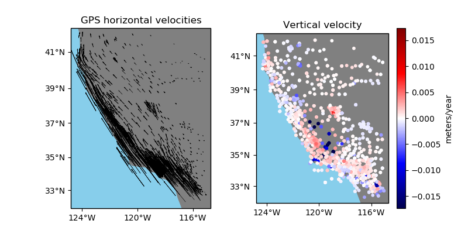

Note
Click here to download the full example code
GPS velocities from California¶
We provide sample 3-component GPS velocity data from the West coast of the U.S. The data were cut from EarthScope Plate Boundary Observatory data provided by UNAVCO. The velocities are in the North American tectonic plate reference system (NAM08). The velocities and their associated standard deviations are in meters/year.
Out:
latitude longitude height ... std_north std_east std_up
0 34.116409 242.906804 762.11978 ... 0.0002 0.00037 0.00053
1 34.116409 242.906804 762.10883 ... 0.0002 0.00037 0.00053
2 34.116409 242.906805 762.09364 ... 0.0002 0.00037 0.00053
3 34.116409 242.906805 762.09073 ... 0.0002 0.00037 0.00053
4 34.116409 242.906805 762.07699 ... 0.0002 0.00037 0.00053
[5 rows x 9 columns]
/home/travis/build/fatiando/verde/data/examples/california_gps.py:54: UserWarning: Tight layout not applied. The left and right margins cannot be made large enough to accommodate all axes decorations.
plt.tight_layout(w_pad=0)
import matplotlib.pyplot as plt
import cartopy.crs as ccrs
import numpy as np
import verde as vd
# The data are in a pandas.DataFrame
data = vd.datasets.fetch_california_gps()
print(data.head())
# Make a plot of the data using Cartopy to handle projections and coastlines
crs = ccrs.PlateCarree()
fig, axes = plt.subplots(
1, 2, figsize=(8, 4), subplot_kw=dict(projection=ccrs.Mercator())
)
# Plot the horizontal velocity vectors
ax = axes[0]
ax.set_title("GPS horizontal velocities")
ax.quiver(
data.longitude.values,
data.latitude.values,
data.velocity_east.values,
data.velocity_north.values,
scale=0.3,
transform=crs,
)
vd.datasets.setup_california_gps_map(ax)
# Plot the vertical velocity
ax = axes[1]
ax.set_title("Vertical velocity")
maxabs = vd.maxabs(data.velocity_up)
tmp = ax.scatter(
data.longitude,
data.latitude,
c=data.velocity_up,
s=10,
vmin=-maxabs / 3,
vmax=maxabs / 3,
cmap="seismic",
transform=crs,
)
plt.colorbar(tmp, ax=ax).set_label("meters/year")
vd.datasets.setup_california_gps_map(ax)
plt.tight_layout(w_pad=0)
plt.show()
Total running time of the script: ( 0 minutes 0.386 seconds)